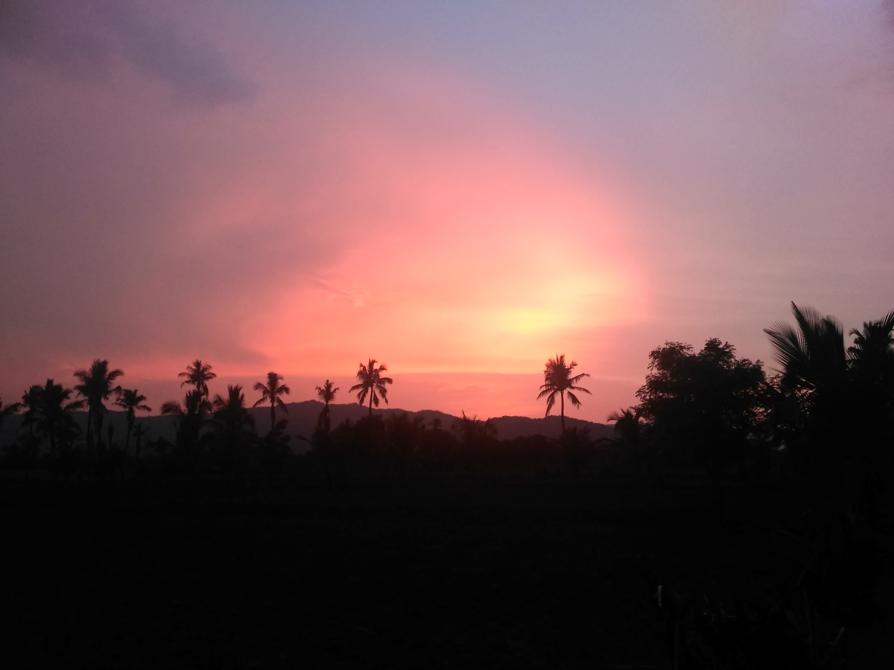

Honda CBR650R

Summary
Work for an organization which provides me the opportunity to improve my skills and knowledge to grow
along with the organization objective.
Education
- Toyota University - (2016 - 2019)
Work Experience
Customer Service Representative - Toyota Inc.
June 2019 - May 2022
- Answered customer inquiries via phone and email
- Resolved customer complaints and issues
- Maintained customer records and updated account information
Administrative Assistant - Honda Corp.
June 2022 - Present
- Assisted with scheduling appointments and meetings
- Managed incoming and outgoing mail and correspondence
- Prepared reports and presentations using Microsoft Office Suite
Skills
- Customer service: ⭐️⭐️⭐️⭐️⭐️
- Microsoft Office Suite: ⭐️⭐️⭐️
- Organizational skills: ⭐️⭐️⭐️⭐️
Awards and Certifications
- Employee of the Month - ABC Inc. (August 2016)
Other